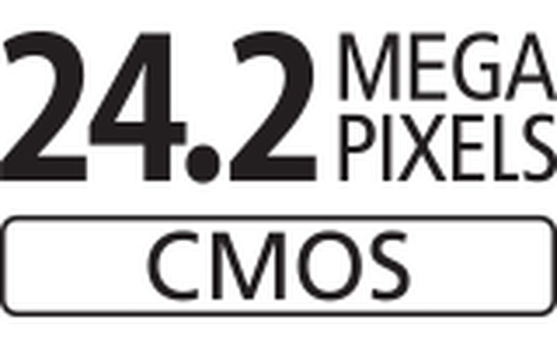

EOS 6D Mark II

Caractéristiques

Capteur CMOS plein format de 24,2 millions de pixels
AF CMOS Dual Pixel
Sensibilité ISO élevée (40.000 ISO)
FULL HD 60 FPS
Vitesse de prise de vue en continu jusqu'à 10 im/s
Les +
Connexion WIFI, bluetooth
GPS intégré : écran LCD tactile haute résolution
Galeries